🏅 Best Spirit Top 8 Nasional
Head Senior Electric
2026
Drone VTOL Otonom — KRTI Belmawa 2026
Tim Wisanggeni · Bidang Elektrik & Operasi Lapangan
Drone VTOL otonom untuk Kontes Robot Terbang Indonesia. Misi: menavigasi lorong selebar 2 meter, mengambil objek, melewati gate, dan menempatkan muatan pada waypoint. Peran saya: memimpin bidang elektrik sekaligus mengoperasikan drone pada misi otonom.
- Arsitektur daya: LiPo 4S 10.000 mAh 14,8 V → Power Distribution Board → 4× ESC 40 A Hobbywing → 4× T-Motor MN3510 700KV
- Regulasi bertingkat: Power Brick 100 A → BEC 5 V 6 A (rail 12 V untuk Jetson), stepdown 5 V 3 A, stepdown 3,3 V
- Companion computer: Jetson Orin Nano Super 8GB + LiDAR 2D RPLIDAR C1 via USB
- Navigasi presisi: GPS RTK HERE 3+ & HERE 4 dengan antena Beitian — akurasi 1 cm
- Flight controller: Orange Cube Pixhawk (ArduPilot/PX4), telemetri 433 MHz, receiver RC i-BUS, rangefinder TF Luna
- Penyederhanaan sistem: servo & LED langsung ke Cube, 9 LED terpisah → 2 LED addressable
- Operasi lapangan: pre-flight check, arming, monitoring telemetri, pengambilalihan kendali untuk landing
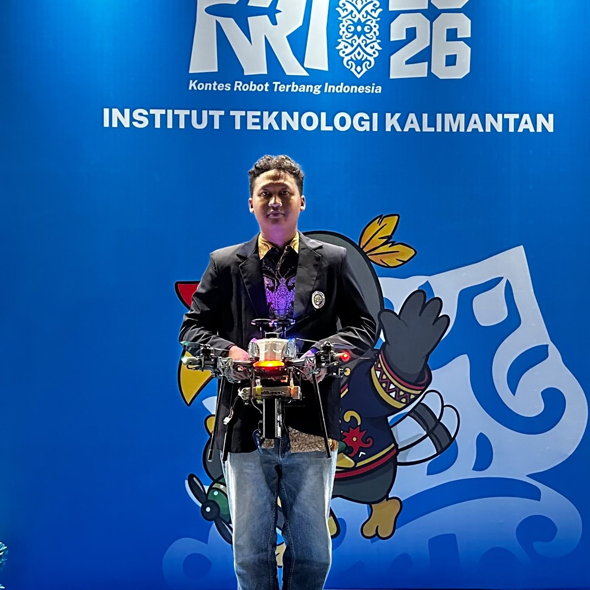
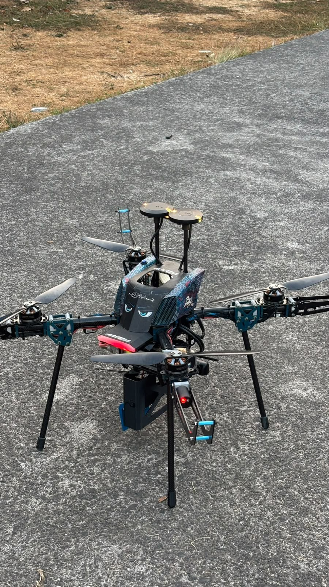
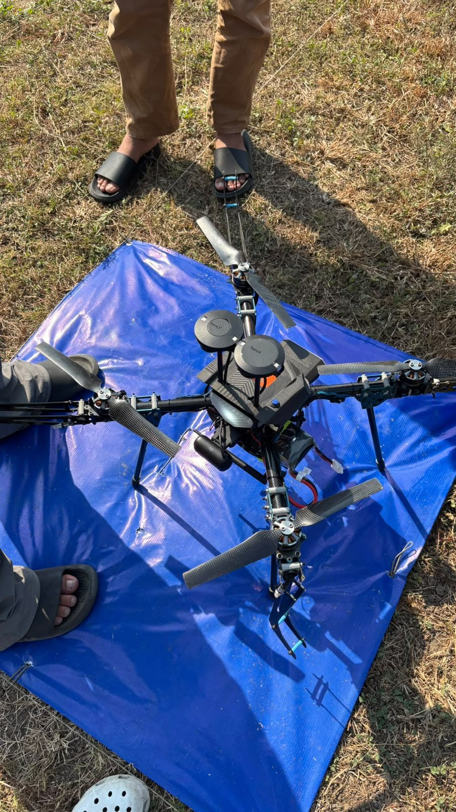
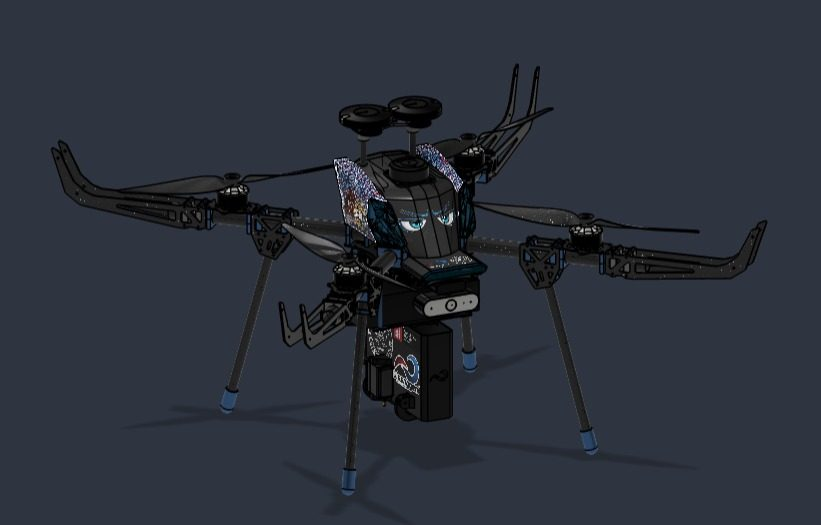
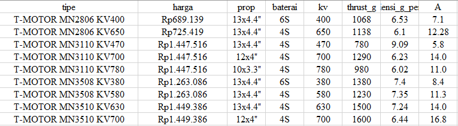
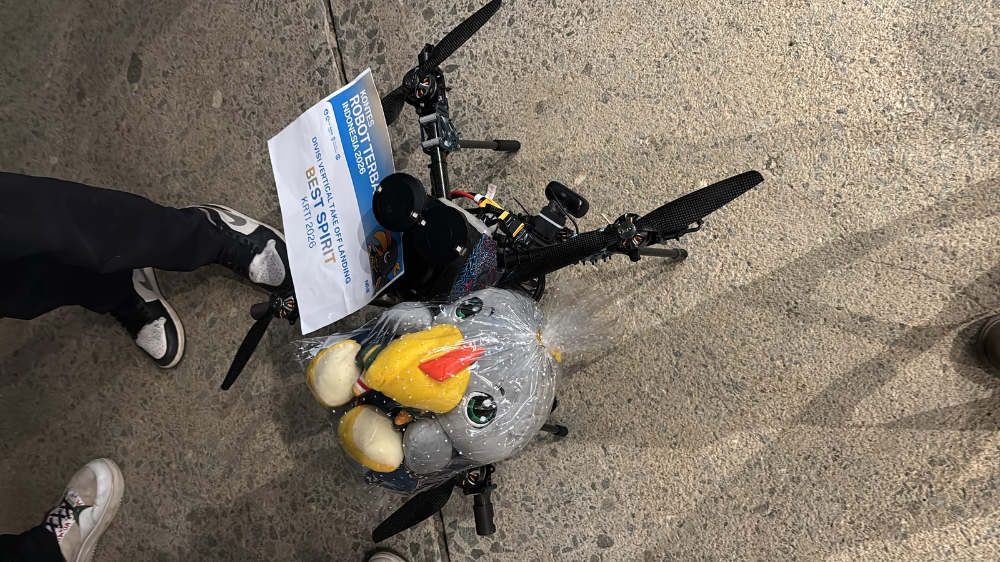
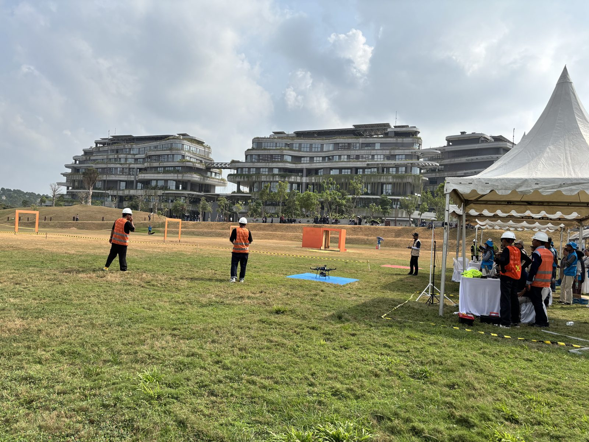
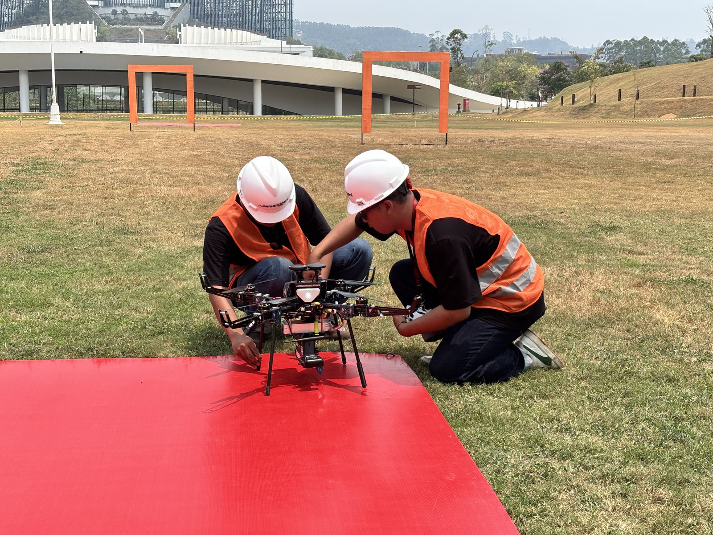
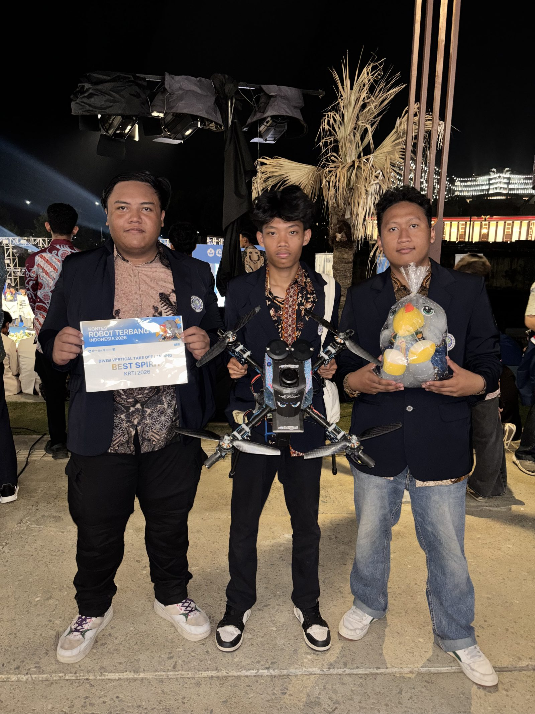
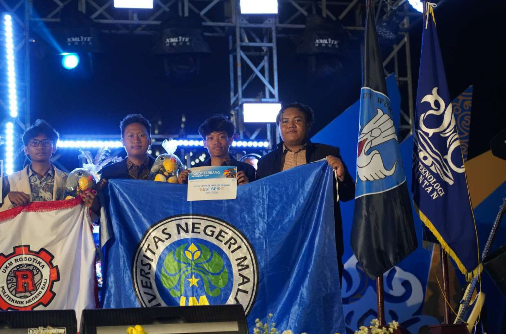
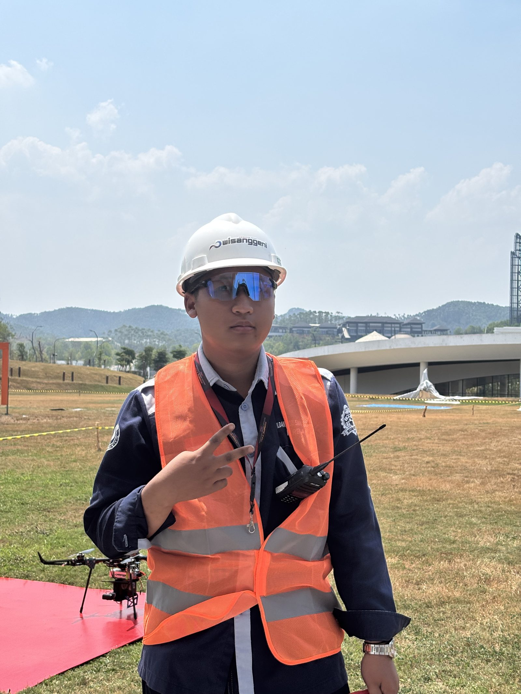
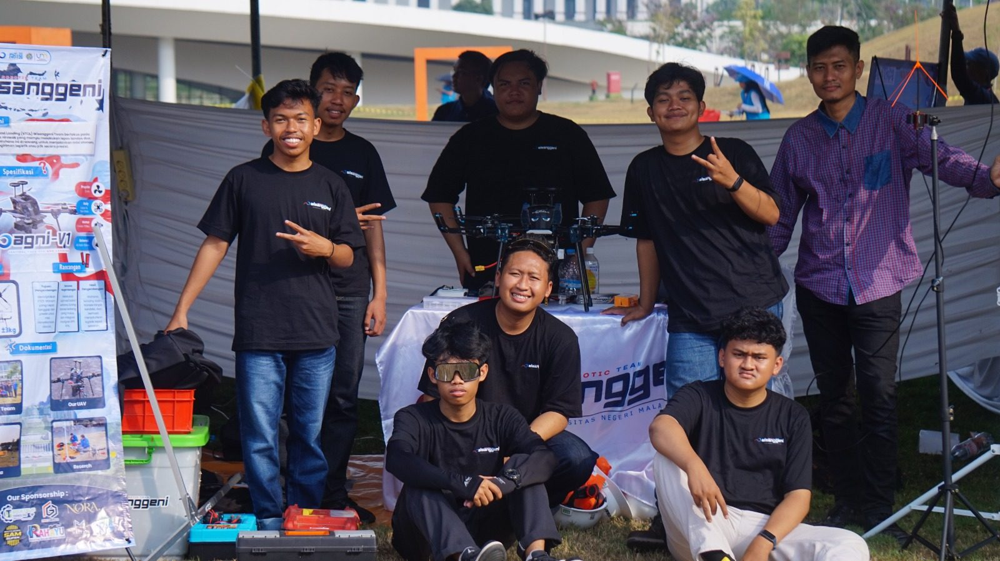
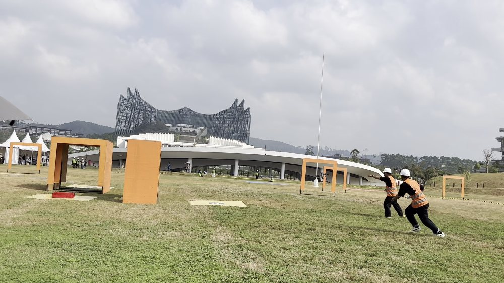
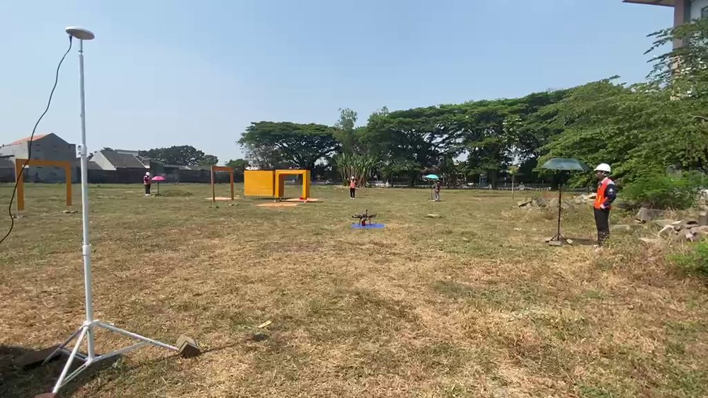
Video dimuat hanya saat tombol putar ditekan — menghemat kuota.